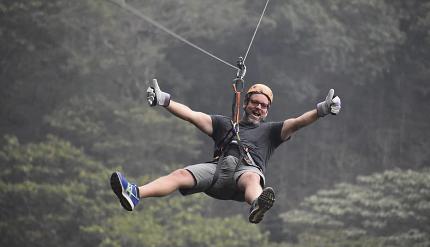

Ruta de las Flores
Historia y cultura
01
Janimpregnate de las tradiciones y culturas
En el Occidente del país se encuentran montañas y elevaciones importantes sobre el nivel del mar, entre ellas se destaca la Cordillera Apaneca-Ilamatepec, cuya parte más alta alcanza los 2,381 mts. En una buena parte de estas elevaciones se ubican seis municipios: Ahuachapán, Concepción de Ataco, Apaneca, Juayúa, Salcoatitán y Nahuizalco, los cuales se comunican por una carretera a la que se le llamó “Ruta de Las Flores”.
La Ruta de Las Flores está impregnada de mucha historia, con la participación de personajes e instituciones que han tenido relevantes actuaciones para alcanzar el reconocimiento de la población de El Salvador y la afluencia del turismo internacional. Una Ruta Turística es la integración de los diferentes espacios turísticos a través del manejo de recorridos turísticos con la interpretación de elementos tales como actividades productivas, atractivos paisajísticos u otro atractivo que permita ofrecer una experiencia de calidad con un manejo creativo de los recursos existentes (áreas naturales, artesanías, atractivos especiales, tradiciones, gastronomía, entre otros).
Gastronomía

Una de las joyas en esta Ruta es la Gastronomía de Nahuizalco. Se constituye por la influenza de sus antepasados, conservando aún algunas tradiciones y costumbres que son manifestadas en las cofradías y fiestas patronales, sin dejar de lado los platillos tradicionales, que hechos a mano por los pobladores se convierten en verdaderas delicias. Entre los platillos más populares se encuentran:
- Tamales
- Tamal Tayuyo
- Tamal de yuca
- Cochinita
- Pinol de Cerdo con Mora
- Atoles
- Chicha
Deportes Extremos
Hay una gran variedad de deportes extremos que puedes practicar en la ruta de las flores, sobre todo en los municipios de Juayua, Apaneca y Ataco, entre los que puedes encontrar
- Canopy
- Buggies
- Juegos de cuerdas altas
- rappel
- caminatas de diferentes niveles de exigencia
- ciclimsmo de montaña
Déjanos saber tu opinión
Ahuachapan y Sonsonate
La Ruta de las Flores es una encantadora travesía sobre la cordillera Apaneca- Ilamatepeq entre los departamentos de Ahuachapán y Sonsonate en el occidente de El Salvador
Distancia desde San Salvador
100+ kms
Lugares
- El tunco 150
- Cerro Verde 131
- Lago de Coatepeque 78
- Ruta de las Flores 56
- Cerro el pital 98
Tag Cloud
Contacto
UNIVERSIDAD DON BOSCO
+503 2505 5555
elsalvadorturismo@udb.edu.sv
Noticias
Copyright © UNIVERSIDAD DON BOSCO. All Rights Reserved.